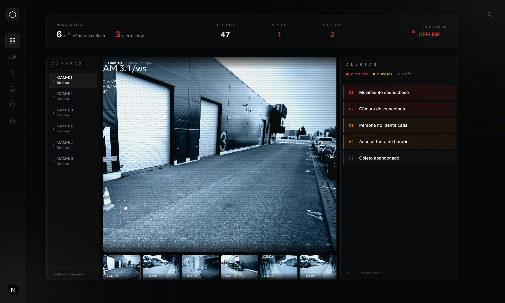

OmniVision monitorea, analiza e interpreta el comportamiento
humano ante posibles amenazas impulsado por IA

Un sistema de visión computacional diseñado para fortalecer la infraestructura pública mediante el procesamiento de datos en tiempo real bajo estándares de soberanía tecnológica.
Diferencia entre un animal, un objeto inanimado y un ser humano con precisión YOLOv8.
Mantiene el ID persistente del sujeto aunque se cruce con otros individuos en escena.
Notifica al personal vía WebSocket, reduciendo el tiempo de respuesta a milisegundos.